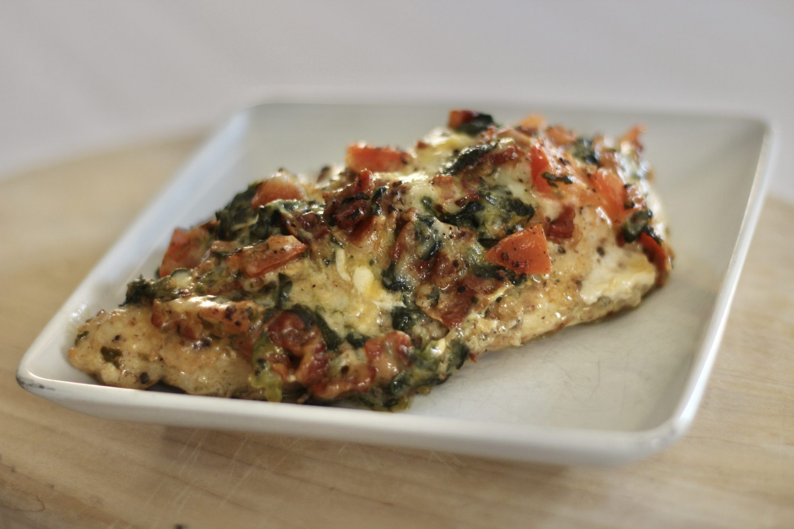

Stuffed Chicken Breast with Bacon, Tomato, and Cheese

Description
Simple to make, yet elegant in presentation and taste. This stuffed chicken breast is often requested when friends and family come to dinner.
Ingredients
- 1 egg
- 4 skinless, boneless chicken breast halves
- 5 ounces frozen chopped spinach, thawed and drained
- ½ cup crumbled cooked bacon
- ½ cup chopped sun-dried tomatoes
- ½ cup grated sharp Cheddar cheese
- ½ cup shredded mozzarella cheese
- ¼ cup mayonnaise
- 3 cloves garlic, crushed
- salt and ground black pepper to taste
Preparation
- Preheat the oven to 375 degrees F (190 degrees C).
- Whisk egg in shallow bowl. Dip and coat chicken breasts in the egg.
- Heat a nonstick pan over medium-high heat. Brown chicken, flipping to ensure both sides are cooked, 5 to 7 minutes total.
- Meanwhile, combine spinach, bacon, tomatoes, Cheddar cheese, mozzarella cheese, mayonnaise, and garlic in a medium bowl.
- Remove chicken from the pan. Slice into the meatiest, thickest side of each breast carefully in a butterfly-cut, creating a "pocket" for the stuffing. Stuff liberally with spinach mixture.
- Place stuffed chicken into a baking dish, with stuffing mixture at the top. If pieces cannot stand on their own, lean against each other or the side of the baking dish to ensure stuffing remains inside chicken. Sprinkle each with salt and pepper. Cover the dish.
- Bake in the preheated oven until chicken is no longer pink in the center and juices run clear, about 40 minutes.
Original Recipe